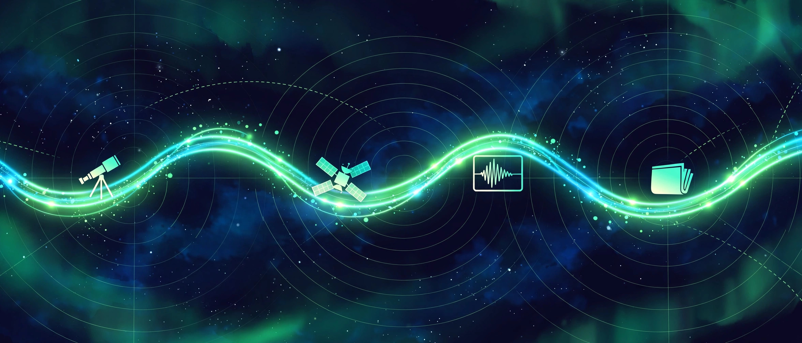
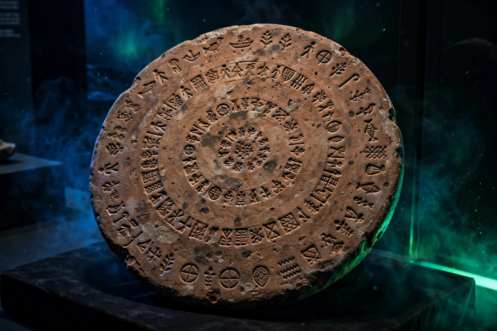
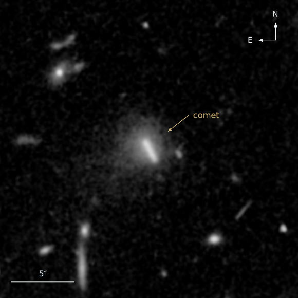
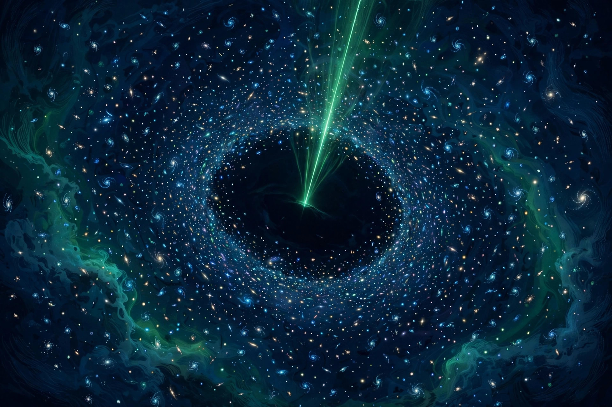
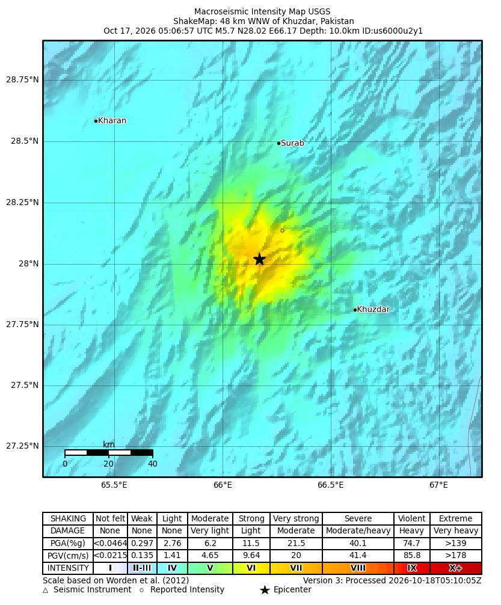
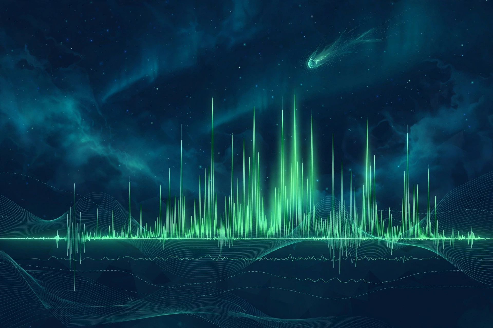
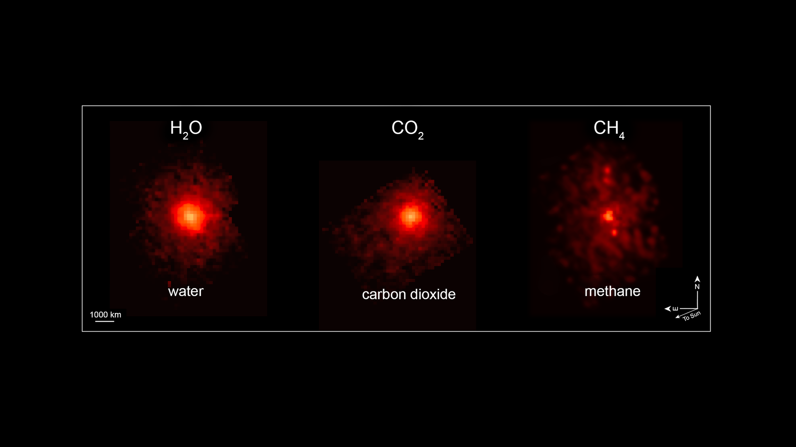
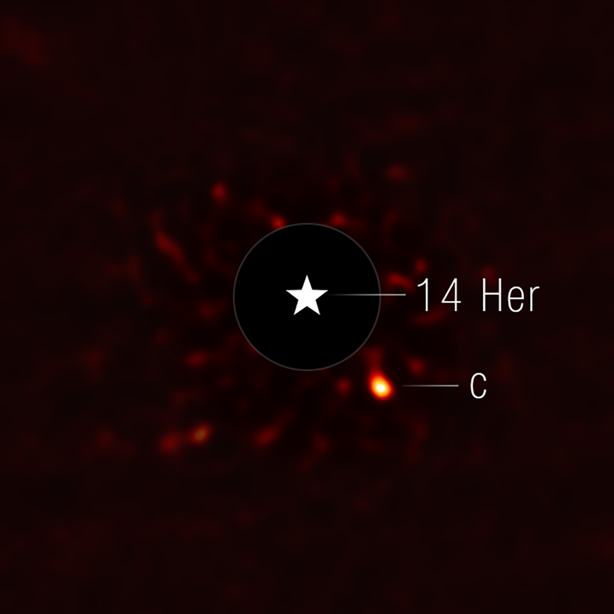

November 01, 2026
A World Maybe 1,000 Kilometers Wide Was Hiding Beyond Pluto
The Vera C. Rubin Observatory has found its first dwarf planet candidate, 2026 ED138 — a large, bright, red world beyond Neptune that sat unnoticed in survey data and in archives going back to 2016.
READ THE STORY →
October 31, 2026
Something Is Watching From 7,500 Light-Years Away — Webb and Hubble Catch the Cat's Head Nebula Staring Back
Released just before Halloween, NASA's new Webb and Hubble views of the Cat's Head Nebula show a dusty pillar inside the Carina Nebula being carved by massive stars — with a newborn star for an eye.
READ THE STORY →
October 28, 2026
Earthquake Watch — Five M5+ Quakes in Under Three Hours off Vanuatu
A magnitude 6.0 struck northwest of Port-Olry, Vanuatu on October 28 — the middle of a tight cluster of five magnitude 5.0-or-greater events in about two hours and 52 minutes, all shallow, all offshore, Green alert.
READ THE STORY →
October 24, 2026
The asteroid crime scene is about to get its first inspector
Four years after NASA deliberately smashed a spacecraft into the asteroid Dimorphos, ESA's Hera mission has hit the brakes 2,300 kilometres out and is due to arrive on 4 November to examine the aftermath.
READ THE STORY →
October 24, 2026
Astronomy magazine's 2026 astrophotography contest has its winners
More than 1,400 entries, 13 years since the last contest — and the grand prize went to "The Dementors of Cepheus," nearly 30 hours of exposure on a supernova remnant.
READ THE STORY →
October 23, 2026
How a story gets onto this page — our verification pipeline
Every Discovery Wire post passes through a verification pipeline before it publishes. Here's how it works — the gates, the kill steps, and the image rules.
READ THE STORY →
October 23, 2026
A Decade-Old Prediction Just Passed a 100,000-Quasar Test — Black Holes Can Be Kicked Out of Their Galaxies
Researchers at Hungary's Eötvös Loránd University found statistical evidence that merging supermassive black holes get kicked from their galactic centers — exactly the signature predicted ten years ago.
READ THE STORY →October 23, 2026
The World's Most Mysterious Manuscript May Have Been Read in the Wrong Order All Along
A new study in Digital Medievalist presents strong evidence that the Voynich Manuscript's pages were misbound — and that every attempt to decode it was working from a scrambled book.
READ THE STORY →
October 23, 2026
Weekly Earthquake Watch — M7.0 Strikes Tibet
The week's largest earthquake — a magnitude 7.0 in a remote stretch of Tibet — killed at least 16 people. A 6.9 in Kamchatka and a Vanuatu swarm round out a busy seven days.
READ THE STORY →
October 22, 2026
Three New Ghosts Found Haunting Cassiopeia
It took 100 hours of staring and a special oxygen filter to reveal three faint blue phantoms near the famous Ghosts of Cassiopeia — and nobody yet knows what they are.
READ THE STORY →October 21, 2026
The Mystery-Lover's Bookshelf: Three Carl Sagan Classics
Chasing cosmic mysteries? These three Sagan classics are where we'd start — the story of the universe, the toolkit for thinking clearly about it, and the reflection on our tiny place in it.
READ THE STORY →
October 20, 2026
The 3,700-Year-Old Printing Press Nobody Can Read
A fired-clay disc found in a Minoan palace in 1908 carries 241 stamped symbols from 45 carved seals, spiraling across both faces — the earliest known printing, and nobody can read a word of it.
READ THE STORY →
October 20, 2026
Japan Just Launched a Mission to Bring Home Pieces of a Martian Moon
JAXA's MMX spacecraft lifted off this morning for Phobos. If it works, a spoonful of a Martian moon arrives on Earth in 2031 — the first material ever returned from the Mars system.
READ THE STORY →
October 19, 2026
The Galaxy Mapper That Found a Comet It Wasn't Looking For
Euclid was built to stare at two billion distant galaxies. Its first comet found it anyway — spotted by a Ph.D. student's software in images where it was never supposed to appear.
READ THE STORY →
October 19, 2026
A Signal From Empty Space — Webb's Unexplained Detection in the Ultra Deep Field
In the most-mapped patch of sky in human history, Webb's spectrograph found a bright infrared signal coming from a spot where nothing is visible — and four explanations can't pin it down.
READ THE STORY →
October 19, 2026
The 845-Year-Old Supernova That Just Revealed Pearls of Gas
In 1181, astronomers in Japan, China, and the Arab world recorded a "guest star" in Cassiopeia. Now Gemini North has shown its remnant strung with pearl-like knots of gas — and the "zombie star" that survived the blast.
READ THE STORY →
October 18, 2026
There's a Treble Clef Hanging Over Two Colliding Galaxy Clusters
NASA's Chandra X-ray Observatory just cracked the case of the "Treble Clef" — a radio formation shaped like a musical symbol, hiding almost directly behind the Milky Way.
READ THE STORY →
October 18, 2026
One side of this planet is 650°C hotter than the other — and Webb just mapped it in 3D
Using a new technique called 'transmission strings,' astronomers traced the uneven shape of the hot Jupiter WASP-17b's atmosphere — finding a cooler morning limb and a blistering evening limb, 1,300 light-years away.
READ THE STORY →
October 18, 2026
The 6.9 That Made Headlines — and the M9.9 That Never Happened
This week's seismic log: a magnitude 6.9 off Kamchatka that Japan's warning system briefly read as a 9.9, a shallow 5.7 in Pakistan with a yellow alert, and the Alaska quake 106 people felt.
READ THE STORY →
October 16, 2026
The Interstellar Comet Is Bleeding Metal — And That Shouldn't Be Happening
A peer-reviewed spectrum of 3I/ATLAS shows very strong iron and nickel emission lines — likely metal vapor off the nucleus — at distances where the surface is far too cold to vaporize them.
READ THE STORY →
October 16, 2026
A Star That Glows Green: The First Chartreuse White Dwarf
A white dwarf 280 light-years away in Draco is the first star ever documented glowing chartreuse green — sodium from swallowed planets, smeared across the spectrum by a crushingly dense atmosphere.
READ THE STORY →
October 15, 2026
Webb Just Sniffed Methane on a Visitor From Another Star — A First
Webb's mid-infrared revisit to interstellar comet 3I/ATLAS caught the first direct methane detection on an object from beyond our solar system — plus carbon dioxide far richer than typical comets.
READ THE STORY →
October 13, 2026
Webb Photographs the Coldest Exoplanet Ever Directly Imaged
14 Herculis c — seven Jupiter masses, roughly -3°C, 60 light-years away — is the coldest world Webb has ever photographed, and its system's planets orbit in a tilted X-crossing tango.
READ THE STORY →October 13, 2026
Meta's Muse AI invite codes, explained — what the 1-billion-token referral actually gives you
Muse, Meta's personal AI agent, is growing through invite codes: redeem one within 48 hours of signing up and both sides get a billion tokens. Here's how the program actually works, and the catches.
READ THE STORY →
October 13, 2026
The Ocean Floor Spoke Twice — This Week's Earthquake Watch
A magnitude 6.7 and a magnitude 6.8 struck the Mid-Atlantic Ridge hours apart overnight, Panama's aftershocks keep coming after Friday's M7.7, and the week logged 383 quakes of M2.5 or greater. The instruments, read out loud.
READ THE STORY →Showing the latest 25 — browse the full archive →